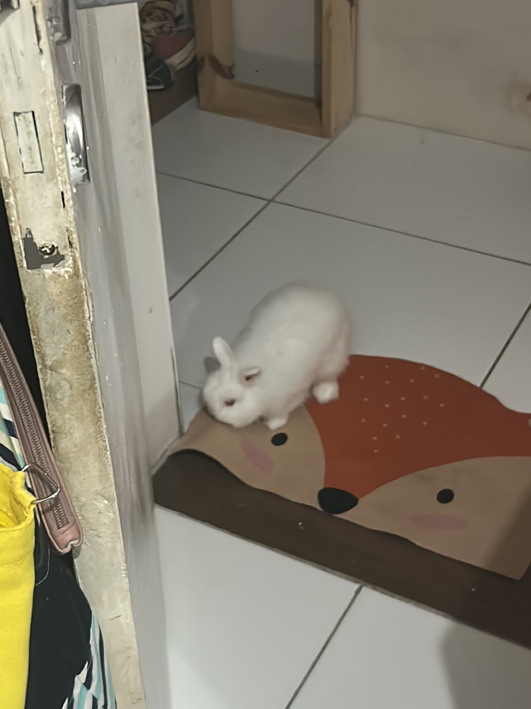
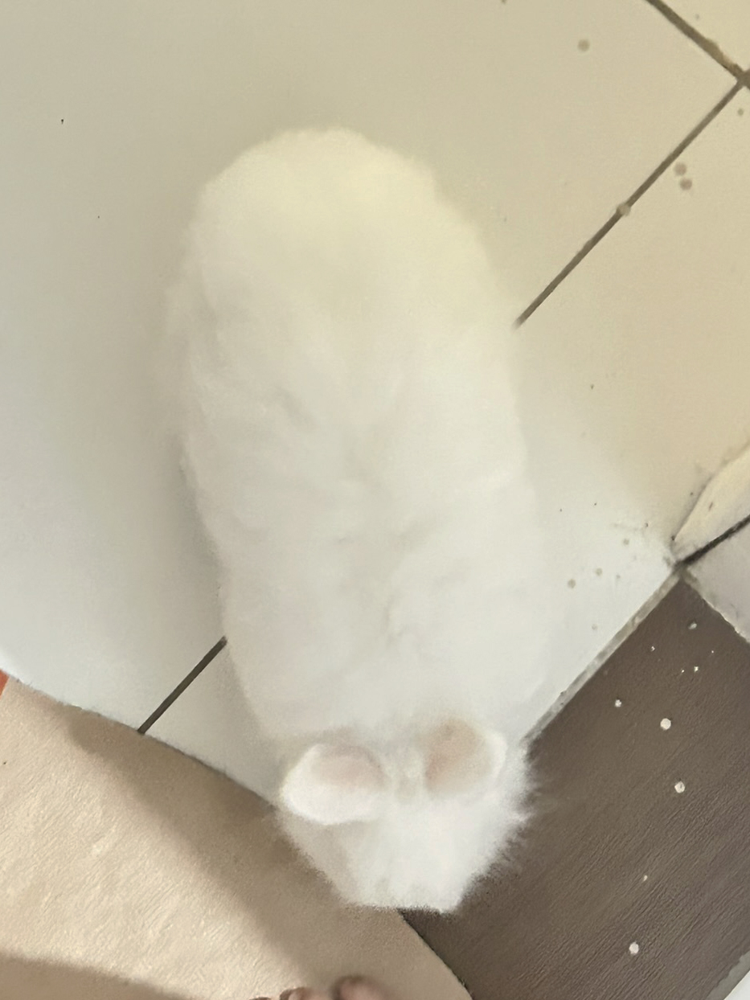
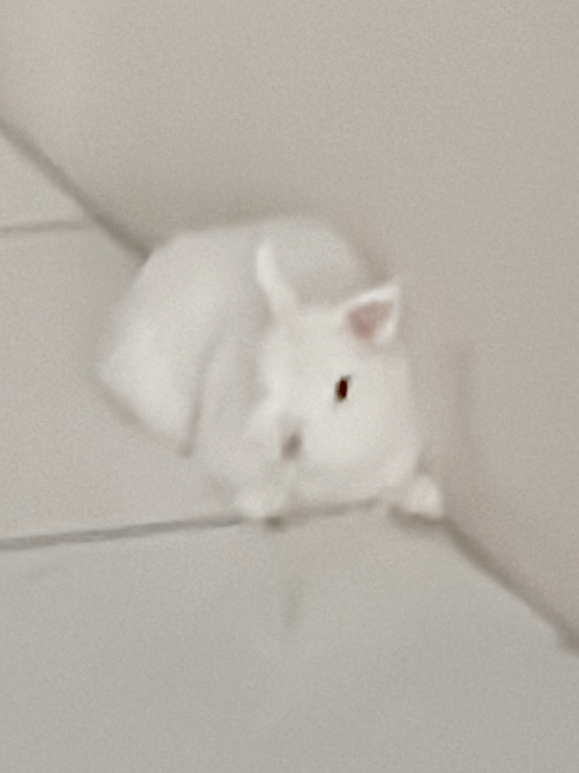
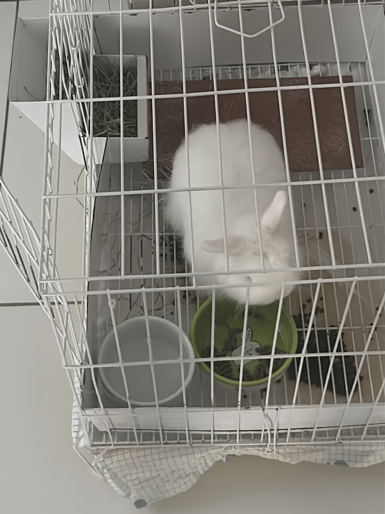
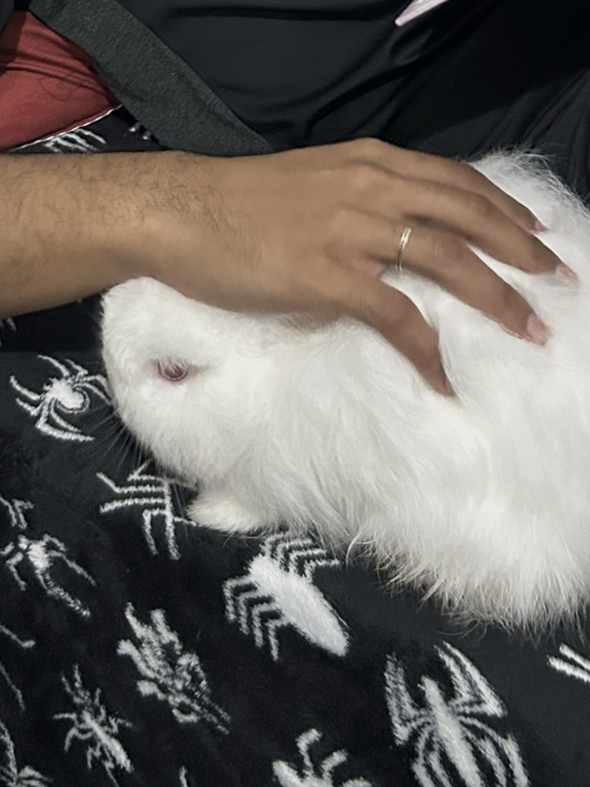
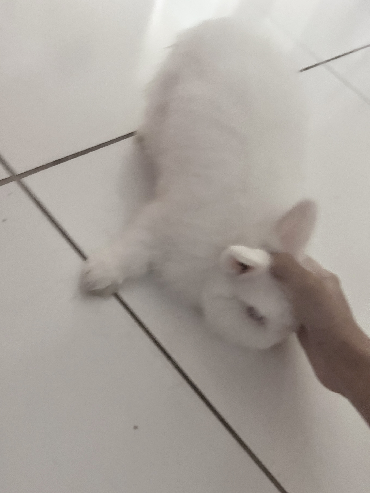

yuki
apresentação
- nome: Yuki
- idade: 4 anos e 6 meses
- espécie: coelho anão
- raça: Netherland Dwarf
- data de nascimento: 18/02/2021
personalidade
- assustado
- teimoso
- fofo
comportamento:
- quase sempre assustado
- sempre se esconde de todo mundo
- do nada, sai pela casa pulando
comidas favoritas
- maçã (a favorita de todos os tempos)
- folhinhas de coentro
- tomate
galeria de fotos






cuidados especiais
- ele não pode se molhar
- a alimentação dele tem que ser bem controladinha
curiosidades
- dentes de coelhos nunca param de crescer
- eles não podem tomar banho e o choque do banho pode até matar eles :o
- quando ele era filhote, ele cabia numa mão
- Ele é da menor raça de coelho do mundo